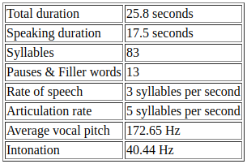
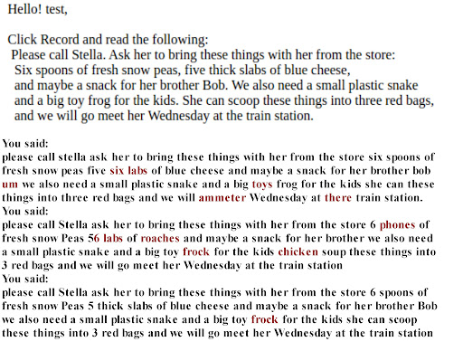
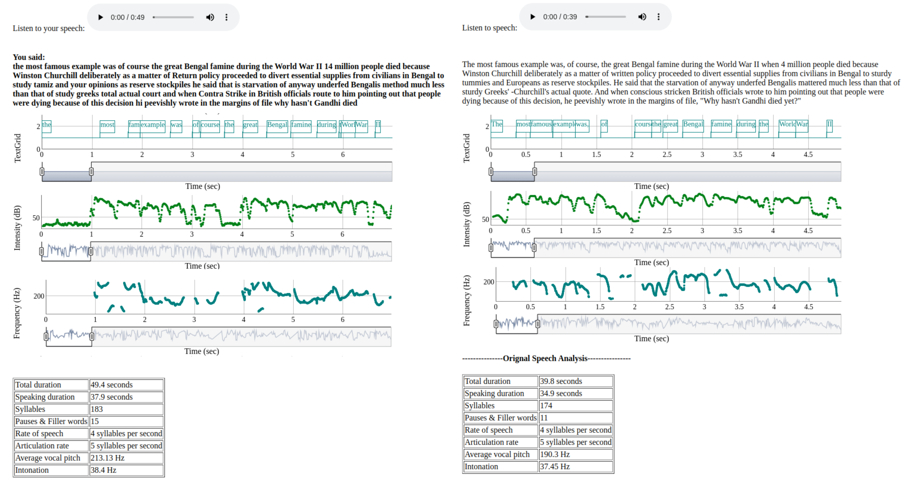

Speech Coach

Project information
Good speeches can have relevance for several decades or centuries. A good speech has the potential to motivate people and impact their minds and hearts forever. A good speech is centered around it’s substance, but how it is delivered is what makes a great speech.
English is an acquired language for most people in India, very few households in India use English to communicate amongst family members, friends in schools/colleges or even colleagues at workplaces.
Oral communication in English is of high priority to employers of multinational corporations in India.
Although, most people are afraid of speaking in front of a crowd, hesitant to take part in group interactions and feel nervous during interviews. While others possess the confidence, they lack speaking skills and a convenient platform to practice.
Objective
Our framework uses free-to-use and open-source products from the speech technology domain.
This framework enables its users to focus on various vocal elements of speech delivery.
The purpose of this paper was to introduce a web-based framework tailored and tested for the Indian accent/dialect that attempts to satisfy the need of a platform to rehearse speeches, gain confidence through practice, help you improve your oratory skills and deliver an articulate speech.
Overview of system architecture
Methodology: process and technologies used
Results from experimental Setup
1. Graphs of the Pitch, Intensity and Transcript aligned with time. We can zoom in to individual words or zoom out to sentences and scroll across the entire speech.
2. Table of vocal element values such as speaking duration, number of pauses and filler words, articulation rate and intonation.
3. Transcript of speech along with filler words and mispronounced or incorrectly recognized words highlighted in red color.
Usage: Learning from mistakes and other orators.
You can get results from a pre-recorded speech and the speech you just recorded simultaneously to improve on your own speech or learn by looking at results from someone else’s speech.
